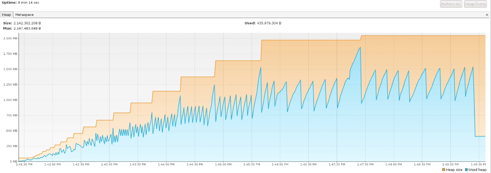

数据库-权衡范式与反范式设计
数据库-权衡范式与反范式设计
什么是范式设计与反范式设计
范式设计（Normalization）
定义：
范式设计是数据库设计中最基础的设计原则之一，它主要通过规范化数据模型，减少数据冗余和数据不一致的问题。
常用的范式：
第一范式（1NF）：要求数据库中的每个字段都是原子性的，即每个字段都是一个不可再分的数据项。例如，学生的姓名和成绩应分别单独作为一个字段，而不是放在同一个字段中。
第二范式（2NF）：要求数据库中的每个非主键字段都完全依赖于主键。所谓完全依赖是指不能存在仅依赖主关键字一部分的属性（针对联合主键），如果存在，那么这个属性和主关键字的这一部分应该分离出来形成一个新的实体，新实体与原实体之间是一对多的关系。这意味着非主键字段不能依赖于其他非主键字段。例如，在一个课程信息表中，如果学分依赖于学期而不是课程编号，那么就不符合第二范式。
第三范式（3NF）：要求数据库中的每个非主键字段都不依赖于其他非主键字段。换句话说，非主键字段之间不应该存在传递依赖关系。例如，在订单信息表中，如果商品价格依赖于商品编号而不是订单号，那么就不符合第三范式。
目的：
- 消除数据冗余，提高数据的一致性和完整性。
- 降低数据维护成本，提升数据库的扩展性、容错性及可用性。
反范式设计（Denormalization）
定义：
反范式设计是根据具体业务需求灵活地对数据库进行设计，追求更高的性能和效率。它违反了范式中的一些规则，允许部分数据的冗余和冗长，以提高查询和操作的速度。
特点：
- 允许数据冗余，以提高查询性能。
- 适用于需要频繁读取数据且对写入性能要求不高的场景。
与范式设计的对比：
- 范式设计注重数据的规范化和减少冗余，而反范式设计则更注重查询性能。
- 在某些情况下，反范式设计可能会导致数据更新和维护的复杂性增加，因为需要更新多个地方的数据以确保数据的一致性。
系统设计与Coding方面的思考
范式设计Join查询带来的影响
场景：查询该订单下的商品信息
查询SQL：
1 | SELECT t_sku.sku_name FROM t_order LEFT JOIN t_sku ON t_order.sku_id = t_sku.id WHERE order.id = 1 |
有什么问题：（这也是互联网公司为什么建议采用单表查询的原因）
- 如果关联的表比较多，性能会急剧下降，产生慢sql，慢sql对系统来说是致命的；
- 如果后面存储数据过大，需要采用分库分表方案，那我们需要对SQL进行重新改造，所带来的成本跟风险都蛮大的。
如果不采用SQL进行关联查询，采用在代码层面进行Join，会有什么影响？
查询代码如下：
1 | SELECT sku_id FROM t_order WHERE id = 1 |
会带来什么问题？
- 如果数据量比较多，会对应用节点内存带来一定压力，甚至会带来FullGC。

这种场景下，我们可以用字段冗余来解决（反范式设计的体现）：我们可以在订单表里面冗余sku名称，这样就能实现需求，也能解决Join查询带来的挑战。
1 | SELECT sku_name FROM t_order WHERE id = 1 |
反范式设计的挑战
常见的反范式设计：冗余字段
字段冗余：指的是在数据库设计中，相同的信息在不同的地方重复出现。这种设计虽然可以提高数据的读取速度，但会增加存储空间的需求和数据维护的复杂性。
数据副本的一致性
数据冗余：反范式化技术的主要特点之一是数据的冗余存储。这意味着相同的数据可能在多个表中都有副本。当修改了某个数据副本而忘记更新其他副本时，数据就会出现不一致的情况。这种情况在更改频繁的数据中尤为突出。
更新操作的复杂性
- 更新操作的复杂性：由于反范式化技术增加了数据冗余，每个副本都需要进行更新以维持一致性。这增加了更新操作的复杂度，并容易出错。
数据一致性的维护策略
- 事务处理：使用事务来保证一致性，即要么所有相关的表都更新成功，要么都回滚到更新前的状态。
- 定时器更新：在数据更新后，使用定时器来定时更新其他相关数据，确保数据的最终一致性。
- 触发器：当数据被修改时，触发其他相关数据的修改，从而确保数据的一致性。
分布式事务
反范式设计通过有意地冗余部分数据以提高查询性能。然而，在分库分表的场景中，这种冗余数据可能导致分布式事务的复杂性增加。当修改一个数据副本时，需要确保所有相关副本都得到更新，以保持数据一致性。这涉及到跨多个数据库或数据表的事务操作。
分布式事务的复杂性
- 跨库事务：当更新内容同时分布在不同库中时，会带来跨库事务问题。这些事务需要协调多个数据库节点，增加了事务的复杂性和执行时间。
- 两阶段提交和XA协议：为了解决跨库事务问题，一般可使用“XA协议”和“两阶段提交”处理。这些方法虽然能最大限度保证数据库操作的原子性，但在提交事务时需要协调多个节点，推后了提交事务的时间点，延长了事务的执行时间。
分布式事务带来的其他问题
- 性能影响：随着数据库节点的增多，分布式事务可能导致性能下降，因为每次事务都需要跨多个节点进行通信和协调。
- 死锁和冲突：在分布式系统中，由于网络延迟和故障等因素，事务在访问共享资源时可能发生冲突或死锁，进一步增加了事务管理的复杂性。
解决方案和策略
全局表：为了避免跨库join查询，可以将一些全局性的、较少修改的表（如“数据字典表”）在每个数据库中都保存一份。这样可以减少跨库事务的需求。
全局表请见博文：数据库-全局表
字段冗余：一种典型的反范式设计，利用空间换时间，为了性能而避免join查询。但这种方法也增加了数据冗余和分布式事务的复杂性。
最终一致性：对于性能要求高但对一致性要求不高的系统，可以采用最终一致性策略。即不苛求系统的实时一致性，而是在允许的时间段内达到最终一致性。这可以通过事务补偿、数据对账等方式实现。
CAP的权衡
反范式设计通过增加数据冗余来提高查询性能。但在分库分表的场景中，这种冗余可能导致CAP权衡的复杂性增加。
一致性（Consistency）问题
- 强一致性挑战：在分布式系统中，强一致性意味着所有节点在任何时候都看到相同的数据。然而，反范式设计引入的数据冗余可能导致在更新数据时，不同节点上的数据副本之间出现不一致。
- 分布式事务的影响：为了保持数据的一致性，可能需要使用分布式事务来确保所有相关的数据副本都得到更新。然而，分布式事务的复杂性（如跨库事务、两阶段提交等）可能导致性能下降和可用性降低。
可用性（Availability）问题
- 节点故障的影响：在分库分表的场景中，一个节点的故障可能导致部分数据无法访问。由于反范式设计引入了数据冗余，一个节点的故障可能影响到多个数据副本的可用性。
- 维护数据一致性的代价：为了确保数据的一致性，可能需要采取额外的措施（如分布式锁、数据同步等），这些措施可能会降低系统的可用性。
分区容错性（Partition tolerance）问题
- 网络分区的影响：在分布式系统中，网络分区是一个常见的问题。当网络分区发生时，系统需要能够继续运行并服务请求，即使部分节点之间无法通信。
- 数据一致性与分区容错的权衡：在发生网络分区时，系统需要在一致性和可用性之间做出权衡。如果系统选择强一致性，可能会阻止写入操作直到所有节点都更新完成，这可能导致可用性降低。相反，如果系统选择可用性，可能会允许写入操作在部分节点上成功，但可能导致数据不一致。
解决方案和策略
- 最终一致性：对于性能要求高但对一致性要求不高的系统，可以采用最终一致性策略。即不苛求系统的实时一致性，而是在允许的时间段内达到最终一致性。
- 数据同步和补偿机制：为了保持数据的一致性，可以建立数据同步和补偿机制。例如，使用消息队列或日志来记录数据变更，并在后台异步地同步数据副本。
- 分布式锁和协调服务：使用分布式锁和协调服务（如ZooKeeper、Etcd等）来协调不同节点之间的数据访问和更新操作，以确保数据的一致性。
使用场景
数据库的范式设计与反范式设计各有其优点和适用场景。在选择使用哪种设计时，需要根据具体的业务需求、数据冗余情况、查询效率以及更新操作的频率等因素进行综合考虑。一般来说，如果业务场景对查询性能有较高要求且可以接受一定程度的数据冗余，那么反范式设计可能是一个不错的选择。而如果业务场景对数据的准确性和一致性有严格要求且希望减少数据冗余和维护成本，那么范式设计可能更为合适。
参考文档：
 微信
微信